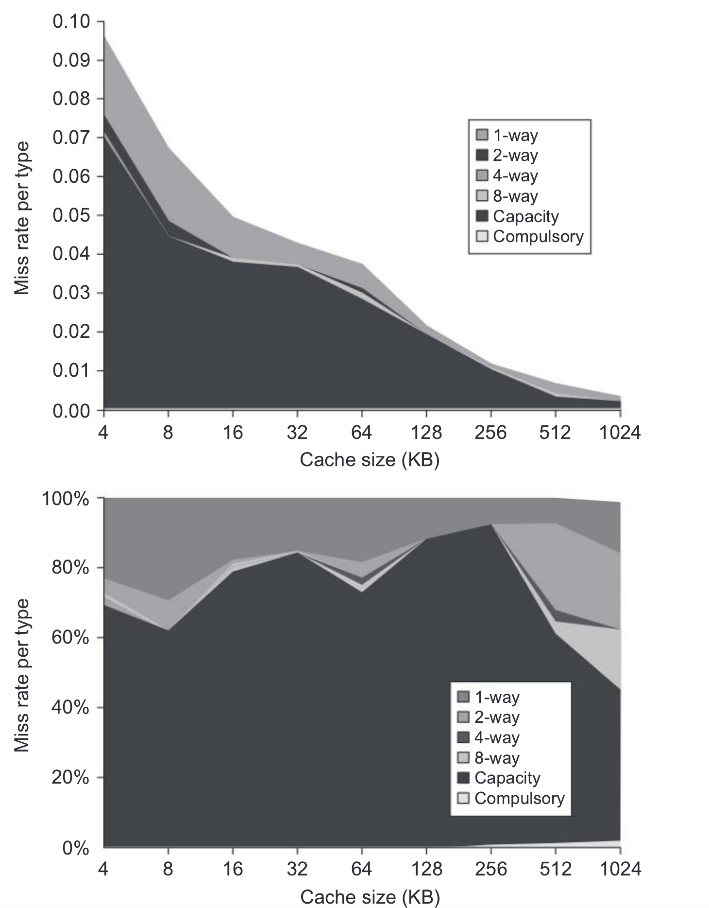
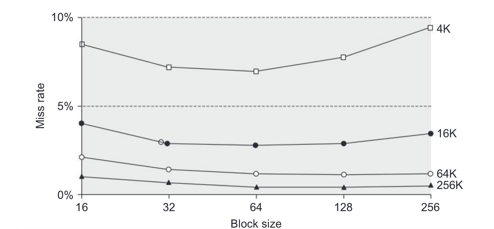
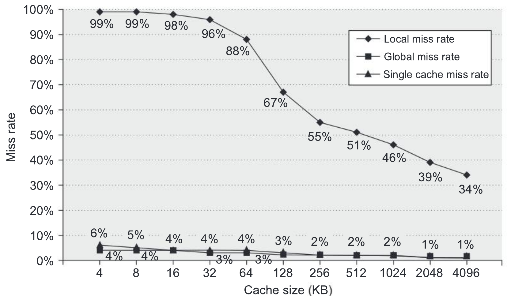
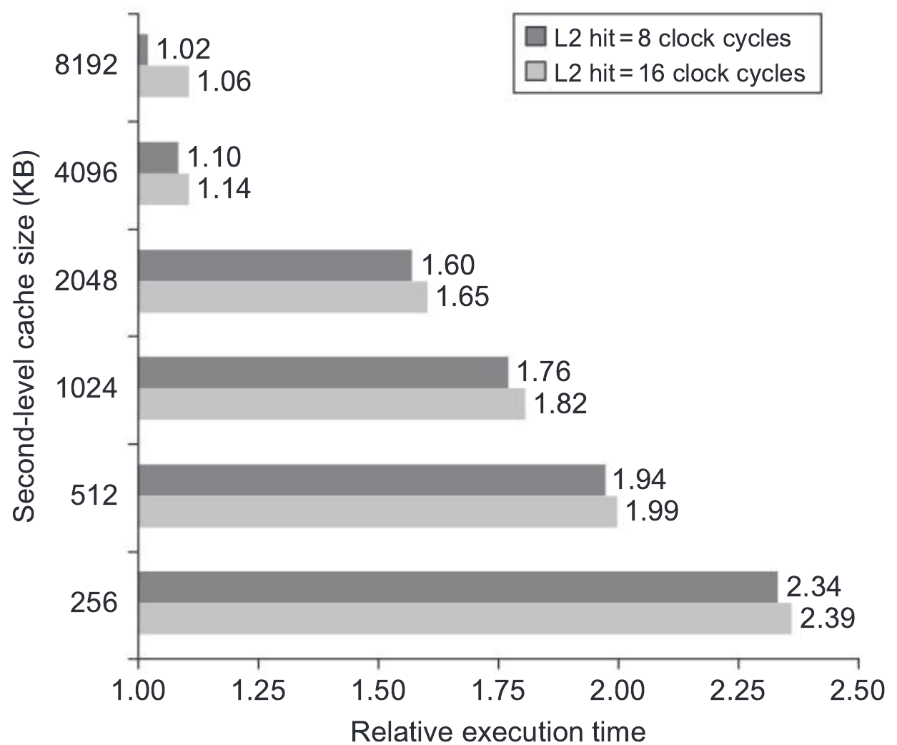
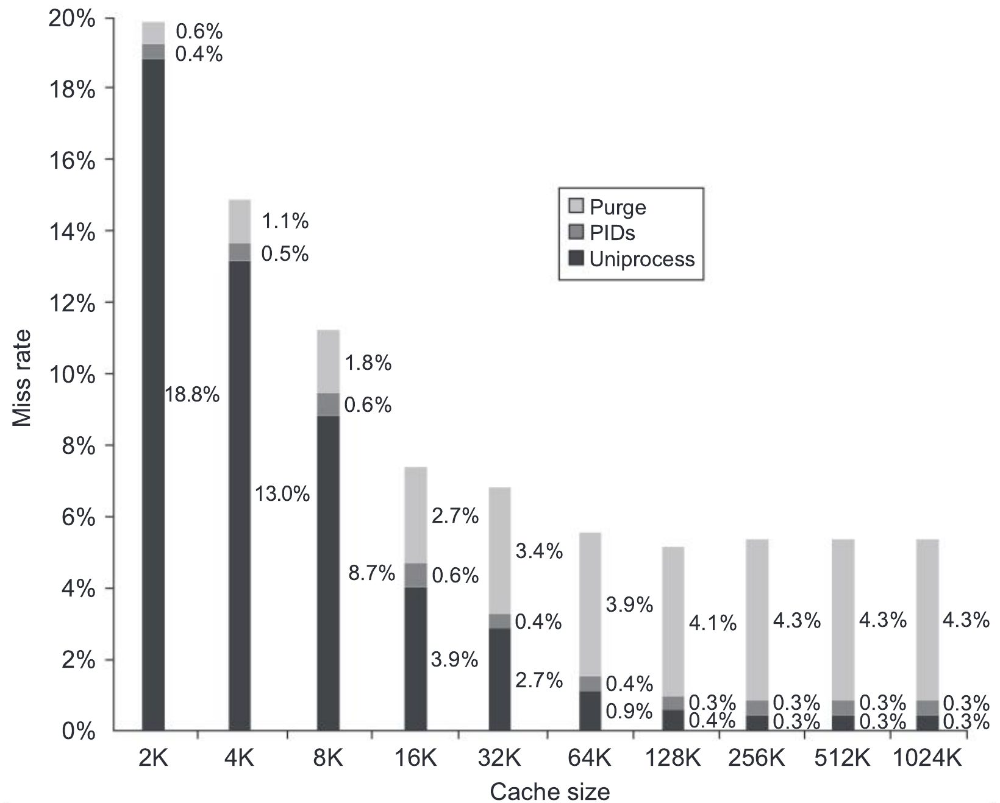

B.3 六种基本的 Cache 优化
平均访存时间公式为我们提供了一个框架，可以按它来介绍提高 Cache 性能的各种优化：
\[ \text{平均访存时间} = \text{命中时间} + \text{失效率} \times \text{失效开销} \]
据此，我们把六种 Cache 优化分成三类：
- 降低失效率：增大块、增大 Cache 容量、提高相联度；
- 降低失效开销：采用多级 Cache、让读优先于写；
- 缩短 Cache 命中时间：在索引 Cache 时避免地址转换。
本节最后，第 B-40 页的图 B.18 总结了这六种技术的实现复杂度和性能收益。
改进 Cache 行为的经典办法是降低失效率，下面介绍三种这样的技术。为了更好地理解失效的成因，先介绍一个简单的模型，它把所有失效分成三类：
- 强制失效：第一次访问一个块时，这个块不可能在 Cache 中，必须先把它调入 Cache。这类失效也称为冷启动失效或首次访问失效。
- 容量失效：如果 Cache 装不下程序执行期间需要的所有块，一些块就会被替换出去，以后又要重新调入，于是在强制失效之外又产生容量失效。
- 冲突失效：如果块的放置策略是组相联或直接映射，映射到同一组的块太多时，一个块可能被替换出去，以后又要重新调入，于是在强制失效和容量失效之外又产生冲突失效。这类失效也称为碰撞失效。这样划分的思路是：有些访问在全相联 Cache 中命中，在 n 路组相联 Cache 中却失效，原因是某些热门组上的访问请求超过了 n 个。
（第 5 章还增加了第四个 C，即一致性失效：多处理器为了保持多个 Cache 一致而清空 Cache，由此引起失效。这里不考虑这类失效。）
图 B.8 按 3C 分类，给出了各类 Cache 失效的相对频度。强制失效是在无穷大的 Cache 中仍会发生的失效；容量失效是在全相联 Cache 中发生的失效；冲突失效是从全相联变为八路组相联、四路组相联等等时增加的失效。图 B.9 用图形表示同样的数据：上图是失效率的绝对值，下图是各类失效占全部失效的百分比随 Cache 容量的变化。
为了显示相联度的好处，冲突失效又按相联度每降低一级所增加的失效细分为四部分，各部分的计算方法如下：
- 八路：从全相联（没有冲突）变为八路组相联引起的冲突失效；
- 四路：从八路组相联变为四路组相联引起的冲突失效；
- 两路：从四路组相联变为两路组相联引起的冲突失效；
- 一路：从两路组相联变为一路组相联（直接映射）引起的冲突失效。
从图中可以看出，SPEC2000 程序的强制失效率非常低，许多长时间运行的程序也是如此。
图 B.8 各种容量 Cache 的总失效率，以及按 3C 分类的各类失效所占百分比。强制失效与 Cache 容量无关；容量失效随容量增大而减少；冲突失效随相联度提高而减少。图 B.9 用图形表示了同样的信息。注意，到 128 K 为止，容量为 N 的直接映射 Cache 与容量为 N/2 的两路组相联 Cache 失效率大致相同；大于 128 KiB 的 Cache 不符合这一规则。还要注意，「容量失效」一栏也就是全相联 Cache 的失效率。数据的收集方法与图 B.4 相同，采用 LRU 替换。
| Cache 容量（KiB） | 相联度 | 总失效率 | 强制失效 | 占比 | 容量失效 | 占比 | 冲突失效 | 占比 |
|---|---|---|---|---|---|---|---|---|
| 4 | 1 路 | 0.098 | 0.0001 | 0.1% | 0.070 | 72% | 0.027 | 28% |
| 4 | 2 路 | 0.076 | 0.0001 | 0.1% | 0.070 | 93% | 0.005 | 7% |
| 4 | 4 路 | 0.071 | 0.0001 | 0.1% | 0.070 | 99% | 0.001 | 1% |
| 4 | 8 路 | 0.071 | 0.0001 | 0.1% | 0.070 | 100% | 0.000 | 0% |
| 8 | 1 路 | 0.068 | 0.0001 | 0.1% | 0.044 | 65% | 0.024 | 35% |
| 8 | 2 路 | 0.049 | 0.0001 | 0.1% | 0.044 | 90% | 0.005 | 10% |
| 8 | 4 路 | 0.044 | 0.0001 | 0.1% | 0.044 | 99% | 0.000 | 1% |
| 8 | 8 路 | 0.044 | 0.0001 | 0.1% | 0.044 | 100% | 0.000 | 0% |
| 16 | 1 路 | 0.049 | 0.0001 | 0.1% | 0.040 | 82% | 0.009 | 17% |
| 16 | 2 路 | 0.041 | 0.0001 | 0.2% | 0.040 | 98% | 0.001 | 2% |
| 16 | 4 路 | 0.041 | 0.0001 | 0.2% | 0.040 | 99% | 0.000 | 0% |
| 16 | 8 路 | 0.041 | 0.0001 | 0.2% | 0.040 | 100% | 0.000 | 0% |
| 32 | 1 路 | 0.042 | 0.0001 | 0.2% | 0.037 | 89% | 0.005 | 11% |
| 32 | 2 路 | 0.038 | 0.0001 | 0.2% | 0.037 | 99% | 0.000 | 0% |
| 32 | 4 路 | 0.037 | 0.0001 | 0.2% | 0.037 | 100% | 0.000 | 0% |
| 32 | 8 路 | 0.037 | 0.0001 | 0.2% | 0.037 | 100% | 0.000 | 0% |
| 64 | 1 路 | 0.037 | 0.0001 | 0.2% | 0.028 | 77% | 0.008 | 23% |
| 64 | 2 路 | 0.031 | 0.0001 | 0.2% | 0.028 | 91% | 0.003 | 9% |
| 64 | 4 路 | 0.030 | 0.0001 | 0.2% | 0.028 | 95% | 0.001 | 4% |
| 64 | 8 路 | 0.029 | 0.0001 | 0.2% | 0.028 | 97% | 0.001 | 2% |
| 128 | 1 路 | 0.021 | 0.0001 | 0.3% | 0.019 | 91% | 0.002 | 8% |
| 128 | 2 路 | 0.019 | 0.0001 | 0.3% | 0.019 | 100% | 0.000 | 0% |
| 128 | 4 路 | 0.019 | 0.0001 | 0.3% | 0.019 | 100% | 0.000 | 0% |
| 128 | 8 路 | 0.019 | 0.0001 | 0.3% | 0.019 | 100% | 0.000 | 0% |
| 256 | 1 路 | 0.013 | 0.0001 | 0.5% | 0.012 | 94% | 0.001 | 6% |
| 256 | 2 路 | 0.012 | 0.0001 | 0.5% | 0.012 | 99% | 0.000 | 0% |
| 256 | 4 路 | 0.012 | 0.0001 | 0.5% | 0.012 | 99% | 0.000 | 0% |
| 256 | 8 路 | 0.012 | 0.0001 | 0.5% | 0.012 | 99% | 0.000 | 0% |
| 512 | 1 路 | 0.008 | 0.0001 | 0.8% | 0.005 | 66% | 0.003 | 33% |
| 512 | 2 路 | 0.007 | 0.0001 | 0.9% | 0.005 | 71% | 0.002 | 28% |
| 512 | 4 路 | 0.006 | 0.0001 | 1.1% | 0.005 | 91% | 0.000 | 8% |
| 512 | 8 路 | 0.006 | 0.0001 | 1.1% | 0.005 | 95% | 0.000 | 4% |
表中「强制失效」「容量失效」「冲突失效」三栏为失效率的组成部分，各自后面的「占比」是相对百分比，三项之和为总失效率的 100%。
找出 3C 之后，计算机设计者能对它们做些什么呢？从概念上说，冲突失效最容易解决：全相联放置可以消除所有冲突失效。但是，全相联的硬件代价高，还可能降低处理器的时钟频率（见第 B-29 页的例题），从而降低总体性能。
对于容量失效，除了增大 Cache 之外，几乎没有别的办法。如果上一级存储器比程序所需的容量小得多，相当大比例的时间都花在存储层次的两级之间搬运数据上，就称存储层次发生了颠簸（thrash）。由于替换次数太多，颠簸时计算机的运行速度接近下一级存储器的速度，加上失效带来的额外开销，甚至可能更慢。
改进 3C 的另一种办法是增大块，以减少强制失效的次数。但后面马上会看到，大块可能增加其他类型的失效。
3C 有助于理解失效的成因，但这个简单模型有它的局限：它能说明平均行为，却未必能解释某一次具体的失效。例如，改变 Cache 容量时，变化的不只是容量失效，冲突失效也会变化，因为更大的 Cache 会把访问分散到更多的块上。因此，Cache 容量改变时，一次失效可能从容量失效变成冲突失效。类似地，Gupta 等人（2013）指出，改变块大小有时还能减少容量失效，而不只是像预期那样减少强制失效。
还要注意，3C 模型也忽略了替换策略，原因一是替换策略难以建模，二是总的来说它的影响较小。不过在特定情况下，替换策略确实会导致反常的行为，例如相联度提高后失效率反而变差，这与 3C 模型相矛盾。（有人提议利用地址踪迹来确定数据在存储器中的最优放置，以避免 3C 模型中的放置失效，这里没有采纳这一建议。）
遗憾的是，许多降低失效率的技术同时会增加命中时间或失效开销。用这三种优化降低失效率固然可取，但必须和「让整个系统更快」这一目标一起权衡。下面第一个例子就说明了全面权衡的重要性。
第一种优化：增大块以降低失效率
降低失效率最简单的办法是增大块。图 B.10 针对一组程序和几种 Cache 容量，给出了块大小与失效率之间的权衡关系。增大块还能减少强制失效。原因是局部性原理包括时间局部性和空间局部性两个方面，而大块正好利用了空间局部性。

但与此同时，大块会增加失效开销。而且，大块使 Cache 中的块数减少，因此可能增加冲突失效；Cache 较小时，甚至可能增加容量失效。块增大到使失效率上升的程度，就没有什么道理了。降低失效率如果反而增加了平均访存时间，同样没有好处，因为失效开销的增加可能超过失效率降低带来的收益。

例题 图 B.11 给出了图 B.10 中所画的实际失效率。假设存储系统的额外开销为 80 个时钟周期，此后每 2 个时钟周期送出 16 字节。因此，送出 16 字节需要 82 个时钟周期，送出 32 字节需要 84 个时钟周期，依此类推。对图 B.11 中的每种 Cache 容量，哪种块大小的平均访存时间最短？
解答 平均访存时间为：
\[ \text{平均访存时间} = \text{命中时间} + \text{失效率} \times \text{失效开销} \]
假设命中时间与块大小无关，为 1 个时钟周期。那么 4 KiB Cache 采用 16 字节块时，访问时间为：
\[ \text{平均访存时间} = 1 + (8.57\% \times 82) = 8.027\ \text{个时钟周期} \]
256 KiB Cache 采用 256 字节块时，平均访存时间为：
\[ \text{平均访存时间} = 1 + (0.49\% \times 112) = 1.549\ \text{个时钟周期} \]
图 B.12 给出了介于这两个极端之间的所有块大小和 Cache 容量下的平均访存时间。粗体表示给定 Cache 容量下最快的块大小：4 KiB Cache 是 32 字节，更大的 Cache 是 64 字节。实际上，当今处理器的 Cache 也普遍采用这两种块大小。
图 B.11 图 B.10 中五种不同容量 Cache 的实际失效率随块大小的变化。注意，4 KiB Cache 采用 256 字节块时的失效率比采用 32 字节块时高。本例中，Cache 要达到 256 KiB，256 字节块才能减少失效。
| 块大小（字节） | 4K | 16K | 64K | 256K |
|---|---|---|---|---|
| 16 | 8.57% | 3.94% | 2.04% | 1.09% |
| 32 | 7.24% | 2.87% | 1.35% | 0.70% |
| 64 | 7.00% | 2.64% | 1.06% | 0.51% |
| 128 | 7.78% | 2.77% | 1.02% | 0.49% |
| 256 | 9.51% | 3.29% | 1.15% | 0.49% |
表中 4K～256K 为 Cache 容量。
图 B.12 图 B.10 中五种不同容量 Cache 的平均访存时间随块大小的变化。32 字节和 64 字节块占优。每种 Cache 容量下最短的平均访存时间用粗体表示。
| 块大小（字节） | 失效开销 | 4K | 16K | 64K | 256K |
|---|---|---|---|---|---|
| 16 | 82 | 8.027 | 4.231 | 2.673 | 1.894 |
| 32 | 84 | 7.082 | 3.411 | 2.134 | 1.588 |
| 64 | 88 | 7.160 | 3.323 | 1.933 | 1.449 |
| 128 | 96 | 8.469 | 3.659 | 1.979 | 1.470 |
| 256 | 112 | 11.651 | 4.685 | 2.288 | 1.549 |
表中 4K～256K 为 Cache 容量。
与所有这些技术一样，Cache 设计者要同时降低失效率和失效开销。块大小取决于下一级存储器的延迟和带宽。延迟高、带宽也高时，宜用大块，因为每次失效能多取很多字节，失效开销却只增加一点。反之，延迟低、带宽也低时，宜用小块，因为块大了也省不了多少时间。例如，小块失效开销的两倍，可能与两倍大小的块的失效开销相差无几。而且，小块数目更多，还可能减少冲突失效。注意，从图 B.10 和图 B.12 可以看出，按失效率最低来选块大小，与按平均访存时间最短来选，结果是不同的。
看过大块对强制失效和容量失效的正反两方面影响之后，下面两小节考察增大容量和提高相联度的潜力。
第二种优化：增大 Cache 以降低失效率
要减少图 B.8 和图 B.9 中的容量失效，最直接的办法是增大 Cache 的容量，缺点也很明显：命中时间可能变长，成本和功耗也会增加。这种技术在片外 Cache 中尤其流行。
第三种优化：提高相联度以降低失效率
图 B.8 和图 B.9 显示了失效率如何随相联度的提高而改善。从这两张图可以归纳出两条经验规则。第一条是：在这些容量下，八路组相联减少失效的效果实际上与全相联一样。把图 B.8 中八路的数据与「容量失效」一栏比较，就能看出两者的差别，因为容量失效是用全相联 Cache 计算出来的。
第二条称为 2:1 Cache 经验规则：容量为 N 的直接映射 Cache，失效率与容量为 N/2 的两路组相联 Cache 大致相同。在 3C 的图中，这条规则对小于 128 KiB 的 Cache 成立。
和许多例子一样，改善平均访存时间的某一方面，往往要以另一方面变差为代价。增大块可以降低失效率，但会增加失效开销；提高相联度则可能以增加命中时间为代价。因此，处理器时钟周期要短，这促使 Cache 设计得简单；失效开销不断增加，又使提高相联度变得有利。下面的例题说明了这一点。
例题 假设提高相联度会使时钟周期按如下比例增加：
\[ \begin{aligned} \text{时钟周期}_{\text{2 路}} &= 1.36 \times \text{时钟周期}_{\text{1 路}} \\ \text{时钟周期}_{\text{4 路}} &= 1.44 \times \text{时钟周期}_{\text{1 路}} \\ \text{时钟周期}_{\text{8 路}} &= 1.52 \times \text{时钟周期}_{\text{1 路}} \end{aligned} \]
假设命中时间为 1 个时钟周期；直接映射时的失效开销为 25 个时钟周期，失效后访问的是一个永不失效的二级 Cache（见下一小节）；失效开销不必取整为整数个时钟周期。用图 B.8 中的失效率，问下面三个不等式分别在哪些 Cache 容量下成立？
\[ \begin{aligned} \text{平均访存时间}_{\text{8 路}} &< \text{平均访存时间}_{\text{4 路}} \\ \text{平均访存时间}_{\text{4 路}} &< \text{平均访存时间}_{\text{2 路}} \\ \text{平均访存时间}_{\text{2 路}} &< \text{平均访存时间}_{\text{1 路}} \end{aligned} \]
解答 各种相联度的平均访存时间为：
\[ \begin{aligned} \text{平均访存时间}_{\text{8 路}} &= \text{命中时间}_{\text{8 路}} + \text{失效率}_{\text{8 路}} \times \text{失效开销}_{\text{8 路}} \\ &= 1.52 + \text{失效率}_{\text{8 路}} \times 25 \\ \text{平均访存时间}_{\text{4 路}} &= 1.44 + \text{失效率}_{\text{4 路}} \times 25 \\ \text{平均访存时间}_{\text{2 路}} &= 1.36 + \text{失效率}_{\text{2 路}} \times 25 \\ \text{平均访存时间}_{\text{1 路}} &= 1.00 + \text{失效率}_{\text{1 路}} \times 25 \end{aligned} \]
每种情况下失效开销的时间都相同，因此都按 25 个时钟周期计。例如，4 KiB 直接映射 Cache 的平均访存时间为：
\[ \text{平均访存时间}_{\text{1 路}} = 1.00 + (0.098 \times 25) = 3.44 \]
512 KiB 八路组相联 Cache 的平均访存时间为：
\[ \text{平均访存时间}_{\text{8 路}} = 1.52 + (0.006 \times 25) = 1.66 \]
用这些公式和图 B.8 中的失效率，可以算出每种容量和相联度下的平均访存时间，结果见图 B.13。可以看出，Cache 不超过 8 KiB 时，在四路以内，本例的三个不等式都成立；从 16 KiB 开始，提高相联度带来的命中时间增加，超过了失效减少所节省的时间。
注意，本例没有考虑时钟频率降低对程序其余部分的影响，因此低估了直接映射 Cache 的优势。
图 B.13 按本例的参数，用图 B.8 中的失效率计算得到的平均访存时间。粗体表示该值比左边的值大，即提高相联度反而增加了平均访存时间。
| Cache 容量（KiB） | 1 路 | 2 路 | 4 路 | 8 路 |
|---|---|---|---|---|
| 4 | 3.44 | 3.25 | 3.22 | 3.28 |
| 8 | 2.69 | 2.58 | 2.55 | 2.62 |
| 16 | 2.23 | 2.40 | 2.46 | 2.53 |
| 32 | 2.06 | 2.30 | 2.37 | 2.45 |
| 64 | 1.92 | 2.14 | 2.18 | 2.25 |
| 128 | 1.52 | 1.84 | 1.92 | 2.00 |
| 256 | 1.32 | 1.66 | 1.74 | 1.82 |
| 512 | 1.20 | 1.55 | 1.59 | 1.66 |
第四种优化：采用多级 Cache 以降低失效开销
减少 Cache 失效过去一直是 Cache 研究的重点，但 Cache 性能公式告诉我们，降低失效开销与降低失效率同样有益。而且，第 2 章第 80 页的图 2.2 表明，工艺发展使处理器速度的提高快于 DRAM，因此失效开销的相对代价随时间不断增加。
处理器与存储器之间的性能差距，使体系结构设计者面临这样一个问题：是把 Cache 做得更快，以跟上处理器的速度，还是把 Cache 做得更大，以弥补处理器与主存之间不断扩大的差距？
一种回答是两者都做。在原有的 Cache 与存储器之间再加一级 Cache，这个选择就简单了：第一级 Cache 可以做得足够小，跟上快速处理器的时钟周期；第二级 Cache 则可以做得足够大，截住许多本来要访问主存的访问，从而减小实际的失效开销。
在存储层次中再加一级，概念上很简单，性能分析却因此变得复杂，第二级 Cache 的有些定义也不那么直观。下面从两级 Cache 的平均访存时间的定义说起。用下标 L1 和 L2 分别表示第一级和第二级 Cache，原来的公式是
\[ \text{平均访存时间} = \text{命中时间}_{\text{L1}} + \text{失效率}_{\text{L1}} \times \text{失效开销}_{\text{L1}} \]
而
\[ \text{失效开销}_{\text{L1}} = \text{命中时间}_{\text{L2}} + \text{失效率}_{\text{L2}} \times \text{失效开销}_{\text{L2}} \]
所以
\[ \begin{aligned} \text{平均访存时间} = {} & \text{命中时间}_{\text{L1}} + \text{失效率}_{\text{L1}} \\ & \times (\text{命中时间}_{\text{L2}} + \text{失效率}_{\text{L2}} \times \text{失效开销}_{\text{L2}}) \end{aligned} \]
公式中第二级的失效率，是针对第一级 Cache 剩下来的访问统计的。为避免歧义，这里对两级 Cache 系统采用以下两个术语：
- 局部失效率：一个 Cache 的失效次数除以对这个 Cache 的访存总次数。不难想到，第一级 Cache 的局部失效率就是 \(\text{失效率}_{\text{L1}}\)，第二级 Cache 的局部失效率就是 \(\text{失效率}_{\text{L2}}\)。
- 全局失效率：一个 Cache 的失效次数除以处理器产生的访存总次数。用上面的记号，第一级 Cache 的全局失效率仍然是 \(\text{失效率}_{\text{L1}}\)，第二级 Cache 的全局失效率则是 \(\text{失效率}_{\text{L1}} \times \text{失效率}_{\text{L2}}\)。
第二级 Cache 的局部失效率很高，因为访存中最容易命中的部分已经被第一级 Cache 截走了。正因为如此，全局失效率才是更有用的指标：它表明离开处理器的访存中有多大比例要一直访问到存储器。
这里正是「每条指令失效数」这一指标的用武之地。用它就不必分辨局部失效率和全局失效率，只要把每条指令的访存停顿扩展一项，计入第二级 Cache 的影响即可：
\[ \begin{aligned} \text{每条指令的平均访存停顿} = {} & \text{每条指令失效数}_{\text{L1}} \times \text{命中时间}_{\text{L2}} \\ & + \text{每条指令失效数}_{\text{L2}} \times \text{失效开销}_{\text{L2}} \end{aligned} \]
例题 假设 1000 次访存中，第一级 Cache 失效 40 次，第二级 Cache 失效 20 次。各种失效率是多少？假设从 L2 Cache 到存储器的失效开销为 200 个时钟周期，L2 Cache 的命中时间为 10 个时钟周期，L1 的命中时间为 1 个时钟周期，每条指令平均访存 1.5 次。平均访存时间是多少？每条指令的平均停顿周期数是多少？不考虑写的影响。
解答 第一级 Cache 的失效率（局部和全局相同）为 40/1000，即 4%。第二级 Cache 的局部失效率为 20/40，即 50%；全局失效率为 20/1000，即 2%。于是
\[ \begin{aligned} \text{平均访存时间} &= \text{命中时间}_{\text{L1}} + \text{失效率}_{\text{L1}} \times (\text{命中时间}_{\text{L2}} + \text{失效率}_{\text{L2}} \times \text{失效开销}_{\text{L2}}) \\ &= 1 + 4\% \times (10 + 50\% \times 200) = 1 + 4\% \times 110 \\ &= 5.4\ \text{个时钟周期} \end{aligned} \]
再求每条指令的失效数。1000 次访存除以每条指令 1.5 次访存，得到 667 条指令。因此，失效次数乘以 1.5，就是每 1000 条指令的失效数：每 1000 条指令有 40 × 1.5 = 60 次 L1 失效，20 × 1.5 = 30 次 L2 失效。假设失效在指令访问和数据访问之间均匀分布，每条指令的平均访存停顿为
\[ \begin{aligned} \text{每条指令的平均访存停顿} &= \text{每条指令失效数}_{\text{L1}} \times \text{命中时间}_{\text{L2}} + \text{每条指令失效数}_{\text{L2}} \times \text{失效开销}_{\text{L2}} \\ &= (60/1000) \times 10 + (30/1000) \times 200 \\ &= 0.060 \times 10 + 0.030 \times 200 \\ &= 6.6\ \text{个时钟周期} \end{aligned} \]
从平均访存时间（AMAT）中减去 L1 命中时间，再乘以每条指令的平均访存次数，也得到同样的每条指令平均访存停顿：
\[ (5.4 - 1.0) \times 1.5 = 4.4 \times 1.5 = 6.6\ \text{个时钟周期} \]
从这个例题可以看出，计算多级 Cache 时，用每条指令失效数可能比用失效率更不容易混淆。
注意，这些公式针对的是读写合计的情况，并假定第一级 Cache 采用写回。如果第一级 Cache 采用写直达，送到第二级的就是全部写，而不只是失效的写，这时还可能要用写缓冲。
图 B.14 和图 B.15 以某一设计为例，给出了失效率和相对执行时间随第二级 Cache 容量的变化。从这两幅图可以得到两点认识。一是只要第二级 Cache 比第一级 Cache 大得多，全局失效率就与只有一级 Cache（容量与第二级 Cache 相同）时的失效率非常接近，因此我们对第一级 Cache 的直觉和知识仍然适用。二是局部失效率不是衡量第二级 Cache 的好指标：它是第一级 Cache 失效率的函数，第一级 Cache 一变，它也随之改变。所以，评价第二级 Cache 时应当使用全局失效率。
有了这些定义，就可以考虑第二级 Cache 的参数了。两级之间最主要的差别在于：第一级 Cache 的速度影响处理器的时钟频率，第二级 Cache 的速度只影响第一级 Cache 的失效开销。因此，许多不适合第一级 Cache 的方案，都可以在第二级 Cache 中考虑。设计第二级 Cache 时主要有两个问题：它能不能降低 CPI 中平均访存时间这一部分？代价有多大？


首先要决定的是第二级 Cache 的容量。第一级 Cache 中的内容很可能都在第二级 Cache 中，所以第二级 Cache 应当比第一级大得多。如果第二级 Cache 只比第一级大一点，局部失效率就会很高。正是这一点促使人们设计出容量巨大的第二级 Cache，大到相当于早年计算机的主存！
还有一个问题：第二级 Cache 采用组相联是否更有意义。
例题 已知下列数据，第二级 Cache 的相联度对它的失效开销有什么影响？
- 直接映射时，\(\text{命中时间}_{\text{L2}}\) = 10 个时钟周期。
- 两路组相联使命中时间增加 0.1 个时钟周期，变为 10.1 个时钟周期。
- 直接映射时，\(\text{局部失效率}_{\text{L2}}\) = 25%。
- 两路组相联时，\(\text{局部失效率}_{\text{L2}}\) = 20%。
- \(\text{失效开销}_{\text{L2}}\) = 200 个时钟周期。
解答 第二级 Cache 为直接映射时，第一级 Cache 的失效开销为
\[ \text{失效开销}_{\text{一路 L2}} = 10 + 25\% \times 200 = 60.0\ \text{个时钟周期} \]
计入相联的代价，命中时间只增加 0.1 个时钟周期，于是第一级 Cache 新的失效开销为
\[ \text{失效开销}_{\text{两路 L2}} = 10.1 + 20\% \times 200 = 50.1\ \text{个时钟周期} \]
实际上，第二级 Cache 几乎总是与第一级 Cache 和处理器同步工作，因此第二级的命中时间必须是整数个时钟周期。运气好的话，第二级命中时间可以压到 10 个周期；否则就要向上取整到 11 个周期。无论哪种情况，都比直接映射的第二级 Cache 好：
\[ \begin{aligned} \text{失效开销}_{\text{两路 L2}} &= 10 + 20\% \times 200 = 50.0\ \text{个时钟周期} \\ \text{失效开销}_{\text{两路 L2}} &= 11 + 20\% \times 200 = 51.0\ \text{个时钟周期} \end{aligned} \]
这样，通过降低第二级 Cache 的失效率，就可以降低失效开销。
另一个要考虑的问题是：第一级 Cache 中的数据是否也在第二级 Cache 中。存储层次最自然的策略是多级包含性，即 L1 中的数据总是也在 L2 中。包含性的好处是：I/O 与 Cache 之间（或者多处理器中各个 Cache 之间）是否一致，只要检查第二级 Cache 就能判定。
包含性的一个缺点是，测量结果可能表明：容量较小的第一级 Cache 适合用较小的块，容量较大的第二级 Cache 适合用较大的块。例如，Pentium 4 的 L1 Cache 块大小为 64 字节，L2 Cache 块大小为 128 字节。这时仍然可以保持包含性，但第二级失效时要多做一些工作：第二级 Cache 必须把映射到被替换的第二级块上的所有第一级块都作废，于是第一级的失效率会略有升高。为了避免这类问题，许多 Cache 设计者让各级 Cache 采用相同的块大小。
但是，如果设计者只能负担比 L1 Cache 稍大一点的 L2 Cache，又该怎么办？还要拿出 L2 的一大部分空间来冗余地保存 L1 Cache 的副本吗？这时合理的做法恰好相反，即采用多级排他性：L1 中的数据永远不会出现在 L2 Cache 中。采用排他性时，L1 发生 Cache 失效，通常是让 L1 和 L2 交换块，而不是用 L2 的块替换 L1 的块，这样就不会浪费 L2 Cache 的空间。例如，AMD Opteron 芯片采用两个 64 KiB 的 L1 Cache 和一个 1 MiB 的 L2 Cache，遵守的就是排他性。
从这些问题可以看出，新手也许会把第一级和第二级 Cache 各自独立设计；但有了相配合的第二级 Cache，第一级 Cache 的设计就会简单一些。例如，如果下一级是写回 Cache，并采用多级包含性，能为重复的写充当后盾，那么第一级采用写直达的风险就小一些。
一切 Cache 设计的本质都是在命中快和失效少之间求得平衡。第二级 Cache 的命中次数比第一级 Cache 少得多，因此重点转向减少失效。这一认识催生了容量大得多的 Cache，以及更高相联度、更大块等降低失效率的技术。
第五种优化：读失效优先于写以降低失效开销
这项优化在写完成之前就先为读服务。我们先来看写缓冲带来的复杂性。
写直达 Cache 最重要的改进是配置大小合适的写缓冲。但是写缓冲确实会使访存复杂化：读失效要用的某个单元，其最新值可能还在写缓冲中。
例题 看下面的代码序列：
sd x3, 512(x0) ; M[512] ← R3 （Cache 索引 0）
ld x1, 1024(x0) ; x1 ← M[1024] （Cache 索引 0）
ld x2, 512(x0) ; x2 ← M[512] （Cache 索引 0）假设 Cache 采用直接映射和写直达，地址 512 和 1024 映射到同一块；写缓冲有四个字，读失效时不检查写缓冲。x2 中的值是否总是等于 x3 中的值？
解答 用第 2 章的术语说，这是经由存储器的写后读数据冒险。我们跟踪一下 Cache 访问的过程，看看危险在哪里。store 执行以后，x3 中的数据进入写缓冲。接下来的 load 使用同一个 Cache 索引，因此失效。第二条 load 指令要把 512 单元的值放进寄存器 x2，同样失效。如果写缓冲还没有把数据写入存储器的 512 单元，读 512 单元就会把旧的、错误的值读进 Cache 块，再送进 x2。如果不采取适当的防范措施，x3 就不等于 x2！
摆脱这一困境的最简单办法，是让读失效一直等到写缓冲变空。另一种办法是读失效时检查写缓冲的内容，如果没有冲突而且存储系统空闲，就让读失效继续进行。几乎所有台式计算机和服务器的处理器都采用后一种办法，让读优先于写。
在写回 Cache 中，处理器写操作的代价也可以降低。假设一次读失效要替换一个脏的存储块。我们不必先把脏块写入存储器、再读存储器，而是可以先把脏块复制到一个缓冲中，然后读存储器，最后再写存储器。这样，读操作就能更早完成，而处理器很可能正在等它。与前面的情况类似，如果发生读失效，处理器要么停顿到缓冲变空，要么检查缓冲中各字的地址是否冲突。
到这里，我们已经介绍了五种降低 Cache 失效开销或失效率的优化，下面来看怎样降低平均访存时间的最后一个组成部分。命中时间至关重要，因为它会影响处理器的时钟频率。如今许多处理器的时钟频率受 Cache 访问时间限制，访问 Cache 需要多个时钟周期的处理器也不例外。因此，命中时间快的重要性超出了平均访存时间公式所反映的范围，因为它对各个方面都有好处。
第六种优化：在 Cache 索引时避免地址转换以降低命中时间
Cache 即使又小又简单，也必须处理地址转换，把处理器给出的虚拟地址转换成访问存储器所用的物理地址。B.4 节会讲到，处理器把主存看作存储层次中的又一级，因此磁盘上虚拟存储的地址必须映射到主存。
按照加快常见情况的原则，Cache 应当使用虚拟地址，因为命中比失效常见得多。这种 Cache 称为虚拟 Cache；使用物理地址的传统 Cache 则称为物理 Cache。稍后会看到，有两项任务必须区分开：一是索引 Cache，二是比较地址。因此要回答两个问题：索引 Cache 用虚拟地址还是物理地址？tag 比较用虚拟地址还是物理地址？如果索引和 tag 全都使用虚拟地址，Cache 命中时就省去了地址转换的时间。那么，为什么不是所有人都采用虚拟寻址的 Cache 呢？
原因之一是保护。页级保护在虚拟地址到物理地址的转换过程中检查，而且无论如何都必须执行。一种解决办法是：失效时从 TLB 复制保护信息，增加一个字段来保存它，每次访问虚拟寻址的 Cache 时都检查这一字段。
原因之二是：每次切换进程后，同样的虚拟地址指向的是不同的物理地址，因此必须清空 Cache。图 B.16 给出了这种清空对失效率的影响。一种解决办法是加宽 Cache 地址 tag，增加一个进程标识符 tag（PID）。如果由操作系统给进程分配这些 tag，那么只有回收重用某个 PID 时才需要清空 Cache；也就是说，PID 用来区分 Cache 中的数据是不是属于这个程序。图 B.16 给出了用 PID 避免清空 Cache 后失效率的改善。

虚拟 Cache 没有更普及的原因之三，是操作系统和用户程序可能用两个不同的虚拟地址访问同一个物理地址。这种重复的地址称为同义词或别名，可能使虚拟 Cache 中出现同一数据的两份副本；修改了其中一份，另一份的值就错了。物理 Cache 不会出现这种情况，因为这些访问会先转换成同一个物理 Cache 块。
解决同义词问题的硬件办法称为反别名，它保证每个 Cache 块都有唯一的物理地址。例如，AMD Opteron 的指令 Cache 为 64 KiB，页大小为 4 KiB，两路组相联，组索引中有三位来自虚拟地址，硬件必须处理这三位引起的别名。Opteron 避免别名的办法很简单：失效时检查全部 8 个可能的位置（四个组中每组两块），确认其中没有一块与正在取的数据的物理地址相符。如果找到相符的块，就把它作废。这样，新数据装入 Cache 时，物理地址一定是唯一的。
软件可以强制别名共享一部分地址位，让这个问题容易解决得多。例如，Sun Microsystems 公司较早版本的 UNIX 要求所有别名的地址最后 18 位相同，这种限制称为页着色。注意，页着色其实就是把组相联映射用于虚拟存储：用 64（26）个组来映射 4 KiB（212）的页，保证物理地址和虚拟地址的最后 18 位相同。有了这一限制，容量不超过 218（256 K）字节的直接映射 Cache 中，各块就绝不会出现重复的物理地址。从 Cache 的角度看，页着色实际上加大了页内偏移，因为软件保证了虚拟页地址和物理页地址的最后几位相同。
虚拟地址带来的最后一个问题是 I/O。I/O 通常使用物理地址，因此要与虚拟 Cache 交互，就需要映射到虚拟地址。（I/O 对 Cache 的影响在附录 D 中进一步讨论。）
有一种办法可以兼得虚拟 Cache 和物理 Cache 的长处：用页内偏移的一部分，也就是虚拟地址和物理地址中相同的那一部分，来索引 Cache。用这个索引读 Cache 的同时，转换地址中的虚拟部分；tag 匹配则使用物理地址。
这样，读 Cache 可以立即开始，而 tag 比较用的仍然是物理地址。这种虚拟索引、物理 tag 方法的限制是：直接映射 Cache 的容量不能超过页大小。例如，在第 B-13 页图 B.5 的数据 Cache 中，索引为 9 位，Cache 块内偏移为 6 位。要使用这一技巧，虚拟页大小至少要是 2(9+6) 字节，即 32 KiB。否则，索引中就有一部分必须从虚拟地址转换成物理地址。图 B.17 给出了采用这一技术时 Cache、转换后备缓冲器（TLB）和虚拟存储的组织。
借助相联度，既能让索引保持在地址的物理部分，又能支持大容量的 Cache。回想一下，索引的位数由下面的公式决定：
\[ 2^{\text{索引}} = \frac{\text{Cache 容量}}{\text{块大小} \times \text{组相联度}} \]
例如，相联度和 Cache 容量同时加倍，索引的位数不变。IBM 3033 是一个极端的例子：研究表明，组相联度超过 8 路以后对失效率几乎没有好处，但它的 Cache 仍是 16 路组相联。IBM 体系结构的页只有 4 KiB，条件不利；靠这么高的相联度，64 KiB 的 Cache 仍然可以用物理索引寻址。
![图 B.17 一个假想的存储层次从虚拟地址到访问 L2 Cache 的全貌。页大小为 16 KiB。TLB 为两路组相联，有 256 项。L1 Cache 为直接映射，16 KiB；L2 Cache 为四路组相联，共 4 MiB。两者都使用 64 字节的块。虚拟地址为 64 位，物理地址为 40 位。图内标注：Virtual address，虚拟地址；Virtual page number，虚拟页号；Page offset，页内偏移；TLB tag compare address，TLB tag 比较地址；TLB index，TLB 索引；L1 cache index，L1 Cache 索引；Block offset，块内偏移；To CPU，送往 CPU；TLB tag，TLB tag；TLB data，TLB 数据；L1 cache tag，L1 Cache tag；L1 data，L1 数据；L1 tag compare address，L1 tag 比较地址；Physical address，物理地址；L2 tag compare address，L2 tag 比较地址；L2 cache index，L2 Cache 索引；L2 cache tag，L2 Cache tag；L2 data，L2 数据；To L1 cache or CPU，送往 L1 Cache 或 CPU；=?，比较是否相等。](images/appb/fig-b-17.png)
基本 Cache 优化小结
本节介绍了改善失效率、失效开销和命中时间的技术。这些技术一般也会影响平均访存时间公式中的其他组成部分，以及存储层次的复杂度。图 B.18 总结了这些技术，并估计了它们对复杂度的影响：「+」表示该技术改善这一因素，「–」表示损害这一因素，空白表示没有影响。图中没有哪一项优化能同时改善一个以上的类别。
图 B.18 本附录介绍的基本 Cache 优化技术小结，给出了各项技术对 Cache 性能和复杂度的影响。一般来说，一项技术只改善一个因素。+ 表示该技术改善这一因素，− 表示它对这一因素不利，空白表示没有影响。复杂度是主观评价，0 表示最容易，3 表示很有挑战性。
| 技术 | 命中时间 | 失效开销 | 失效率 | 硬件复杂度 | 说明 |
|---|---|---|---|---|---|
| 增大块 | − | + | 0 | 很简单；Pentium 4 的 L2 采用 128 字节的块 | |
| 增大 Cache 容量 | − | + | 1 | 广泛采用，尤其是 L2 Cache | |
| 提高相联度 | − | + | 1 | 广泛采用 | |
| 多级 Cache | + | 2 | 硬件代价高；L1 块大小 ≠ L2 块大小时更难；广泛采用 | ||
| 读优先于写 | + | 1 | 广泛采用 | ||
| 在 Cache 索引时避免地址转换 | + | 1 | 广泛采用 |